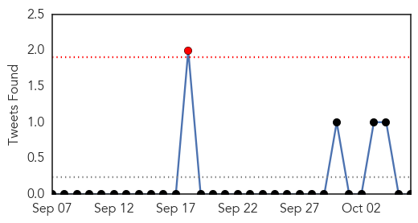
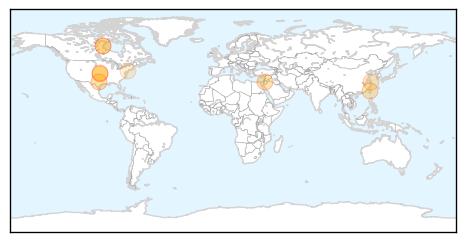
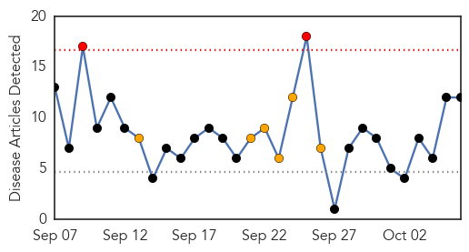
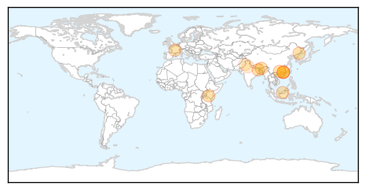

Influenza
30-Day Web Trend
16 alerts, 7 warnings

30-Day Twitter Trend
0 alerts, 0 warnings

Article Locations
Article Confidences

Top Articles:
- 0.997
- Total number of enterovirus D68 cases at GRH now at eight
- 0.994
- In-depth analysis of bat influenza viruses concludes they pose low risk to humans
- 0.988
- Health Officials urge everyone to get vaccinated for the Flu
- 0.982
- Enterovirus D68: Explaining Hamilton's 139 cases
- 0.953
- Drive-thru flu vaccine clinic coming to Old Town Saginaw
- 0.869
- Shots advised as peak flu season looms
- 0.752
- 'Virological penicillin': Plant MIR2911 directly targets influenza A viruses
- 0.709
- Registered Nurses first Regulator to Issue Position Statement on Mandatory Influenza Immunization -- EDMONTON, Oct. 6, 2014
- 0.559
- Enterovirus D-68 update: Second Hamilton preschooler awaits CDC results as officials try to quell fears
- 0.505
- When should you choose the ER over walk-in care?
Top Tweets:
-
No tweets found for Oct 06, 2014
Dengue Fever
30-Day Web Trend
2 alerts, 6 warnings

30-Day Twitter Trend
0 alerts, 2 warnings

Article Locations
Article Confidences

Top Articles:
- 0.997
- 5 dead in Guangdong dengue fever outbreak - Headlines, features, photo and videos from ecns.cn
- 0.983
- 1,431 New Dengue Cases Reported In South China
- 0.968
- Virus cocktail in veiled attacks
- 0.965
- 1,279 new dengue cases found in Chinese province
- 0.960
- Kenya : Health concerns raised as viruses re-emerge
- 0.958
- New vaccine approach to fight dengue
- 0.953
- Guangdong Reports 1,431 New Dengue Fever Cases, 1 Death
- 0.951
- Health staff not allowed to go on holidays
- 0.950
- South China province reports 1,431 new dengue fever cases, one death
- 0.923
- Let’s not get overexcited - Letters
- 0.583
- North civic body may pay Rs 5 lakh for dengue deaths
- 0.543
- 75 dengue patients arrive in two Rawalpindi hospitals
Top Tweets:
-
No tweets found for Oct 06, 2014